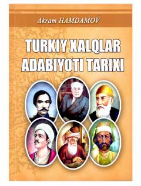

TXTurkiy xalqlar adabiyoti tarixi va qadimgi madaniy merosiga bag'ishlangan o'quv qo'llanma.
Ushbu o'quv qo'llanmada turkiy xalqlar adabiyoti tarixi, qadimgi turk dostonlari, afsonalar va madaniy yodgorliklar haqida ma'lumot beriladi. Kitob filologiya yo'nalishi bakalavriat talabalari hamda turkiy xalqlar tarixiga qiziquvchilarga mo'ljallangan.